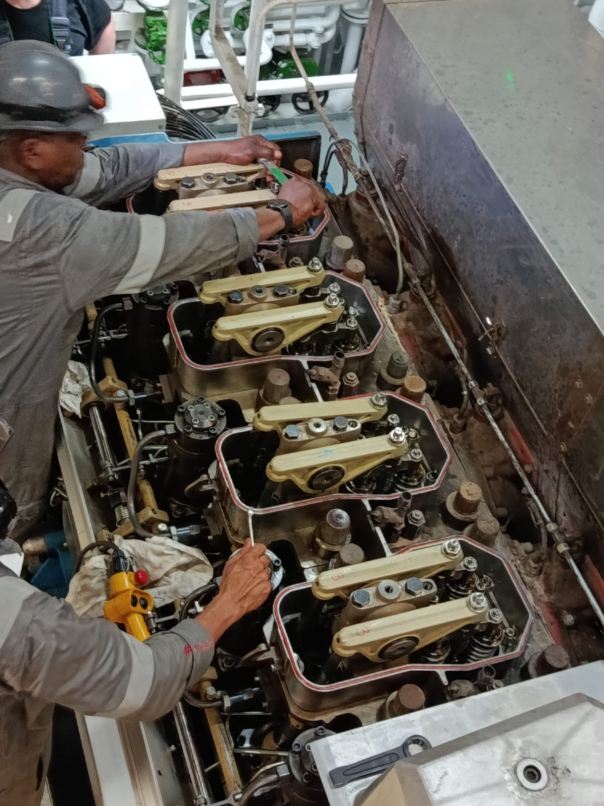

MECJOECNC
Ingeniería Mecánica Naval
Mantenimiento industrial y naval, reparación de maquinaria, diagnóstico de averías, equipos rotativos y soluciones técnicas aplicadas a sistemas marítimos e industriales.
Joel Valle González
Ingeniero Mecánico de formación, con amplia experiencia en operación, mantenimiento, reparación y diagnóstico de maquinaria naval e industrial.

Perfil profesional
Soy Joel Valle González, Ingeniero Mecánico de formación, con más de tres décadas de experiencia profesional vinculada a la operación, mantenimiento, reparación y diagnóstico de maquinaria naval e industrial.
Mi trayectoria incluye responsabilidades como Jefe y Primer Maquinista en buques mercantes, mantenimiento de motores diésel, equipos rotativos, bombas, sistemas auxiliares y resolución de averías, además de trabajos de reparación naval y mantenimiento industrial. Complemento esta experiencia práctica con formación continua en mantenimiento avanzado, CAD/CAM, SolidWorks, mantenimiento 4.0 y formación técnica profesional.
MECJOECNC representa la integración entre experiencia de campo, criterio técnico y actualización tecnológica, con orientación hacia la ingeniería mecánica naval, el mantenimiento industrial, el diagnóstico de fallos, la mejora de equipos y la transmisión de conocimientos técnicos.
Especialidades técnicas
Mecánica naval
Motores diésel marinos, sistemas de propulsión, maquinaria auxiliar, grupos electrógenos y mantenimiento de instalaciones mecánicas a bordo.
Bombas y equipos rotativos
Diagnóstico, desmontaje, reparación, montaje y mantenimiento de bombas centrífugas, cojinetes, sellos mecánicos, acoplamientos y equipos auxiliares.
Mantenimiento industrial
Mantenimiento preventivo, correctivo y predictivo de maquinaria y sistemas mecánicos, análisis de fallos y planificación de intervenciones.
Alineación, vibraciones y condición
Alineación de maquinaria, análisis de vibraciones, evaluación del estado mecánico y detección de anomalías en equipos rotativos.
Diseño mecánico y CAD/CAM
Modelado y documentación técnica con SolidWorks, diseño mecánico, preparación para fabricación y aplicaciones CAD/CAM.
Diagnóstico y resolución de averías
Identificación de causas raíz, análisis técnico, pruebas funcionales, documentación de intervenciones y propuesta de soluciones de mantenimiento.
Formación y actualización profesional
Actualmente compagino mi actividad profesional en el ámbito naval e industrial con los estudios del Máster Universitario en Ingeniería Marina de la Universidad de Cantabria, curso académico 2026-2027, reforzando mi preparación en mantenimiento, instalaciones, sistemas energéticos y gestión técnica.
Mi formación continua comprende mantenimiento industrial y mantenimiento 4.0, SolidWorks CAD/CAM, diagnóstico y mantenimiento predictivo de maquinaria, análisis de vibraciones, motores diésel, ingeniería naval y tecnologías aplicadas a la fiabilidad de equipos. Paralelamente, curso el certificado profesional SSCE0110 de Docencia de la Formación Profesional para el Empleo.
Mantengo además en trámite la homologación en España de mi titulación universitaria y participo en un procedimiento de acreditación de competencias profesionales en Andalucía. Mi objetivo es integrar más de tres décadas de experiencia técnica con la actualización académica, digital y metodológica necesaria para desempeñar funciones de ingeniería, mantenimiento, diagnóstico y formación técnica.
Contacto profesional
Para consultas y comunicaciones profesionales:
MECJOECNC · Cádiz, España